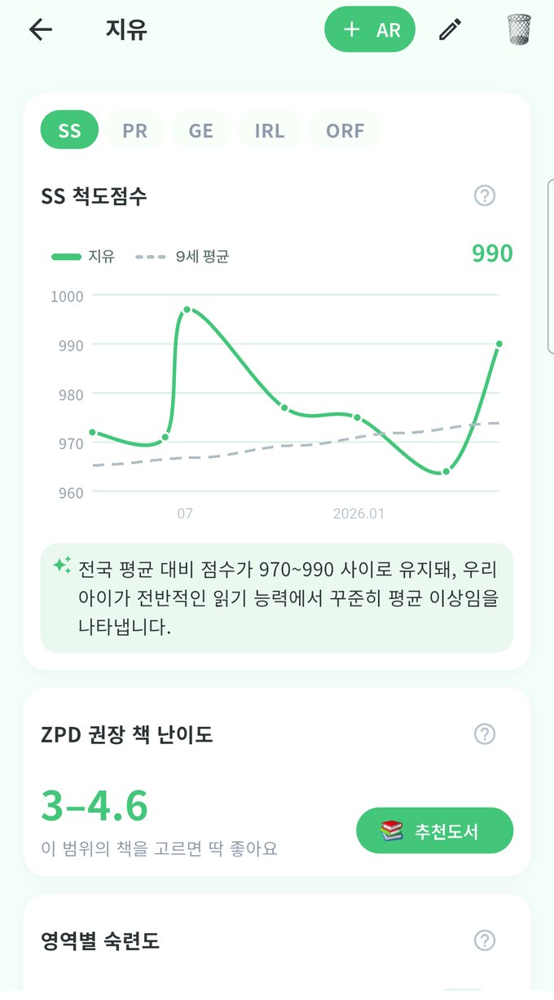

물어보긴 애매하고, 지난번과 비교하려면
파일철을 뒤져야 하고.
학년이 올라도 같은 잣대 — 성장 추적의 기준
GE 3.4 = 미국 3학년 4개월 차 수준
아이에게 딱 맞는 책 레벨 범위 — 원서 고를 때 바로 활용

SS·GE·ZPD·영역별 성취도를 AI가 알아서 정리
쌓일수록 보이는 추이, 같은 나이대 평균과 비교
강점·보완점·학습 가이드에 ZPD 맞춤 원서까지
검사일 기준으로 자동 정렬되니까
지난 1~2년의 성장 곡선이
그 자리에서 바로 완성됩니다.
AR 기록 · 학원 일정 · 위젯 · 가족 공유 · 학원비
스토어에서 "다다링"을 검색하세요